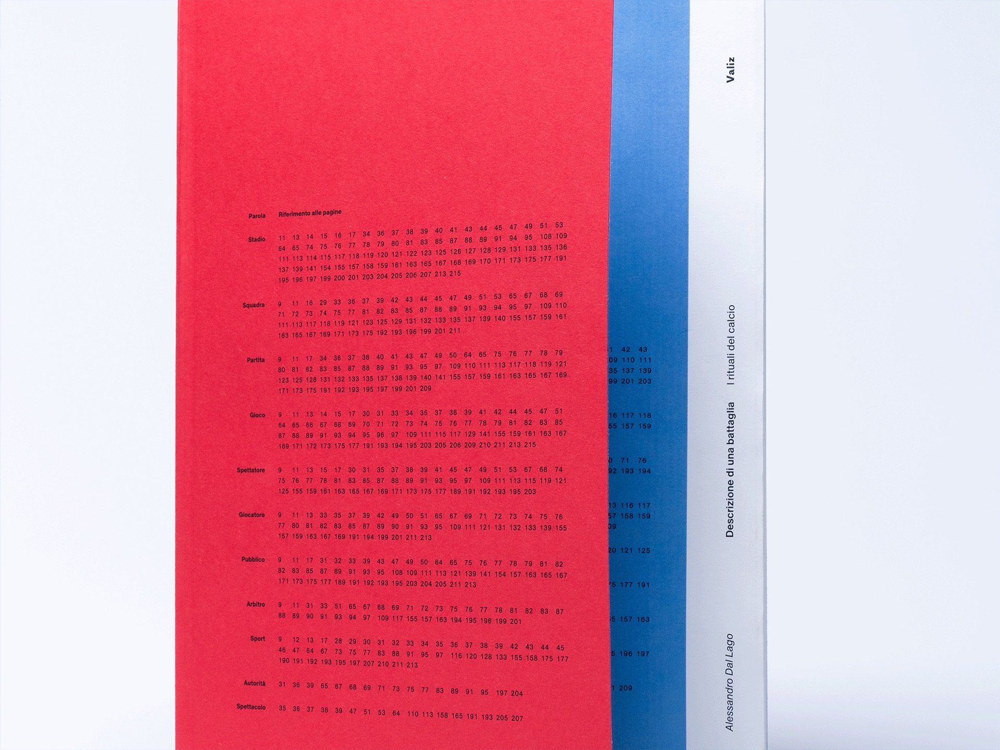
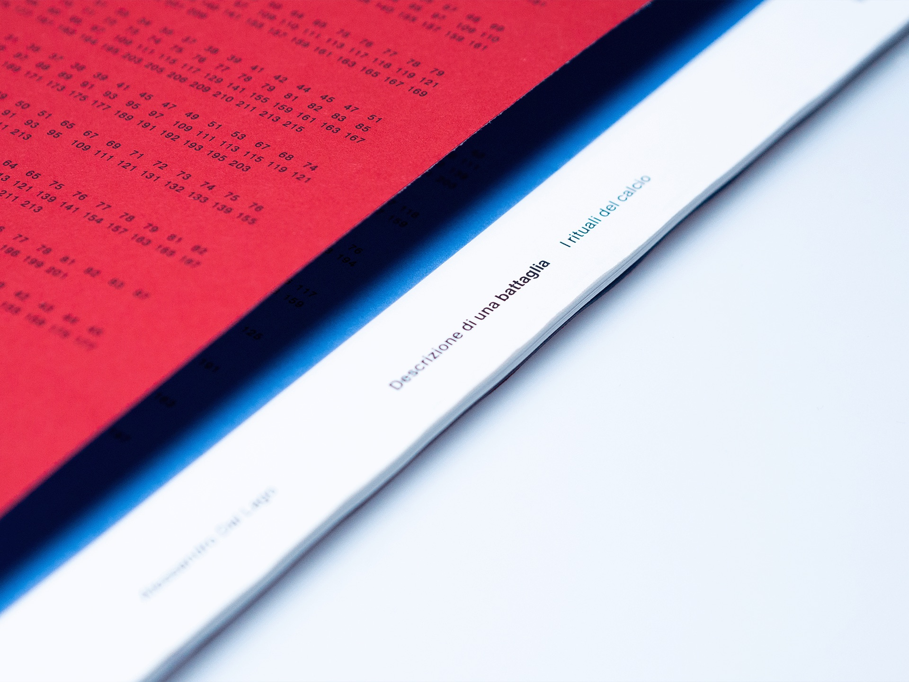
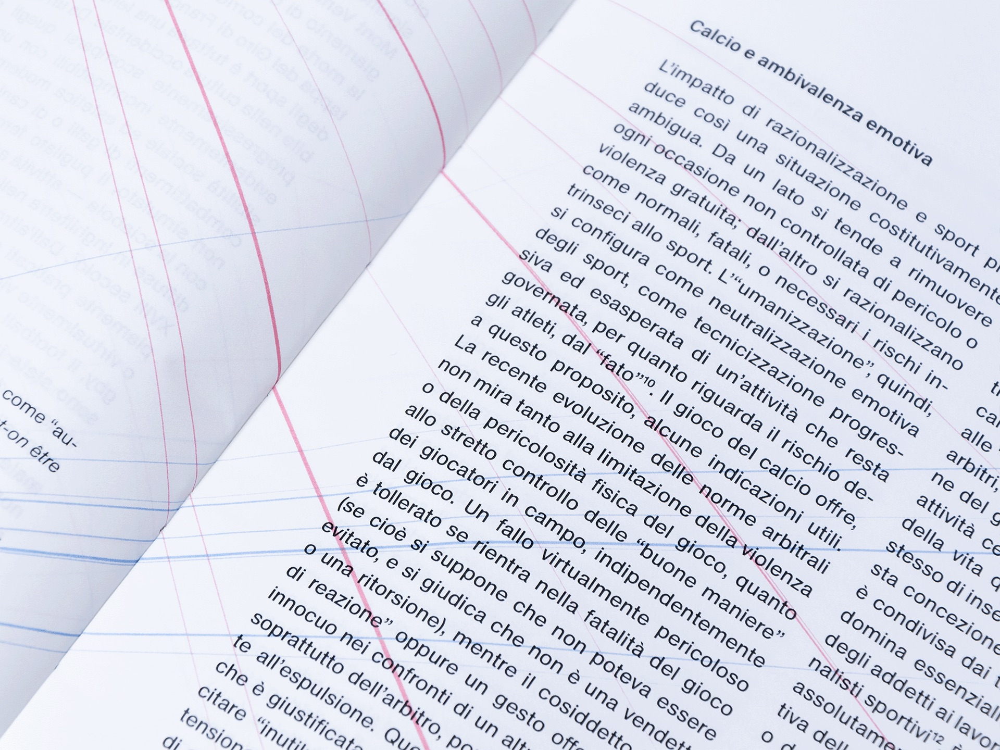
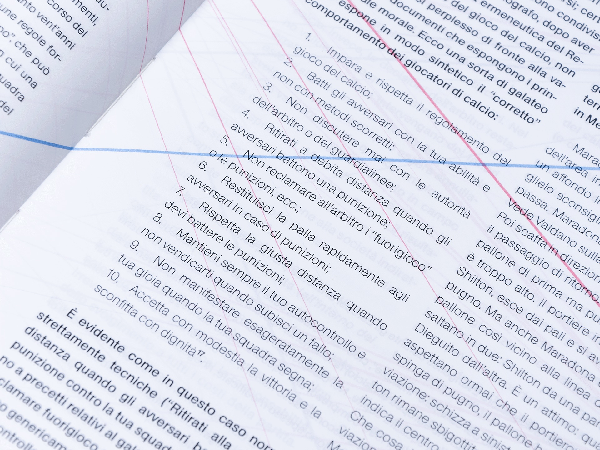
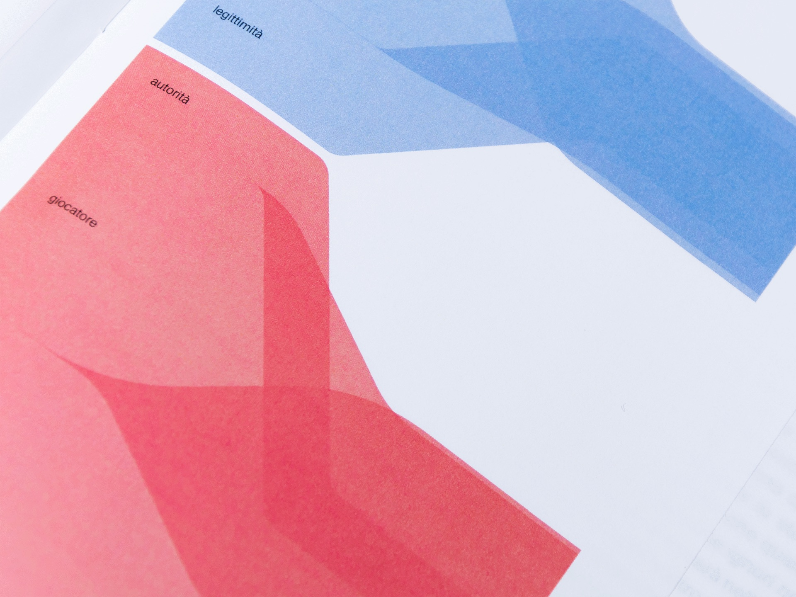
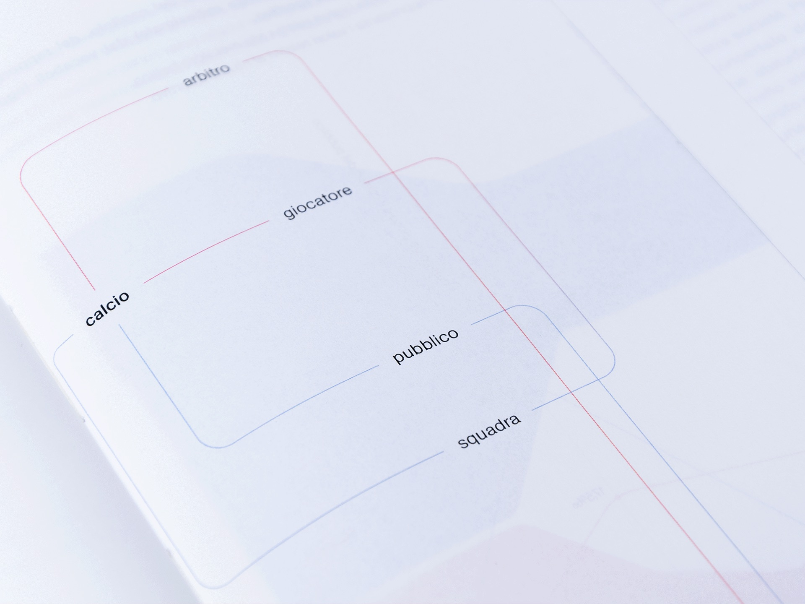

Abstract
Descrizione di una Battaglia is the project for a book that would visually translate the contents of Alessandro Dal Lago's eponymous essay.
The foundation for the project's development lies in a concept that the author himself claims to be the pivotal point of his inquiry: namely, epoché. Epoché is a technique deployed in sociology to establish a logical distance from the subject being examined, so that it is possible to observe the "oddities" of an ordinary phenomenon that would otherwise be concealed by the sheen of normality that wraps events taken for granted.
That's the reason why soccer, and the complex system of ritual relationships associated with it, are represented by the terms of the human cardiovascular system. This is a powerful metaphorical framework: the meticulousness of clinical practice provides a seamless solution for formal continuity, respecting the scientific credibility of Dal Lago's sociological studies. At the same time, the image of blood, of its flow within the human body and its gush out of wounds, is as culturally reminiscent of the primordiality that distinguishes the pulses of fans as it is of the violence they are victims or authors of.
Veins and arteries as a metaphorical framework
The metaphorical framework describes the intricate, fragile mechanism of arousal generation and release within a stadium by connecting words referring to the macro-categories of the sports ritual and the warfare metaphor, according to morphological structures reminiscent of those of various organs in the human body. Click here for a focus on the structures.
Words related to the sports ritual—everything granting the individuals populating the stadium the opportunity to express their emotions—are represented by the red color of arteries.
Words related to the warfare metaphor—the symbolisms allowing the virtuous functioning of the ritual by representing it in the staging of a conflict—are represented by the blue color of veins.
Infographic appendices
The distinction between these two conceptual classes is exploited with the aim of highlighting some metatextual considerations hidden within the pages of the essay. From a preliminary analysis, it was possible to observe how the quantitative use of specific words referring to the spheres of the sports ritual and the warfare metaphor outlines a trend parallel to the balance between the production and release of arousal described by the words themselves.
To further emphasize this core idea within the design concept, an infographical apparatus was developed for each one of the chapters. Thanks to it, the protagonists (actors or concepts) involved in the mechanism of arousal production and release are explained through the relationships that regulate their interaction.
In this way it was possible to ensure a higher degree of readability for the metatextual information and to offer a reading key to the graphic system that integrates the text.





